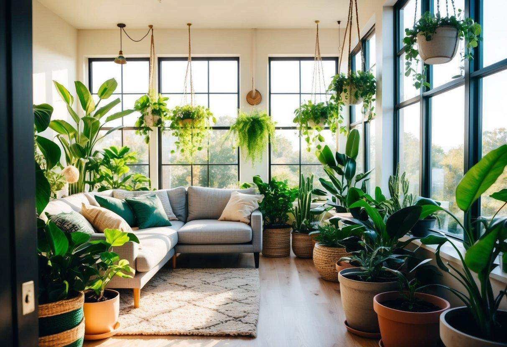

1. Natural Beauty
Plants add colour and freshness to our rooms. They make homes attractive and lively.
Discover the Benefits of Green Living

Indoor plants are more than decorations. They bring nature into our homes and make our surroundings beautiful.
Plants add colour and freshness to our rooms. They make homes attractive and lively.
Green plants create a calm atmosphere and make our living space peaceful.
Growing indoor plants helps us stay connected with nature.
Taking care of plants is an enjoyable hobby that teaches patience and responsibility.
Indoor plants are a wonderful addition to every home. Start growing plants and enjoy nature.